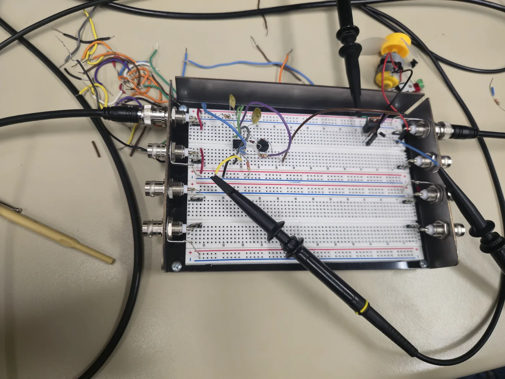

01 / Analog circuits
Closed-loop motor control.
A three-stage analog DC motor controller connecting PWM generation, reference filtering, and closed-loop current regulation.
ECE 303 · Electronics Laboratory · Fall 2025
- Signal
- 5 kHz PWM
- Adjustment
- 20–80% duty cycle
- Reference
- 800 mV DC

The task
Design and build an analog motor controller, calculating component values from first principles and then checking its behavior with laboratory instruments.
How the system works
A 555 timer generates a 5 kHz PWM signal. Independent charge and discharge paths, using 1N4148 diodes, allow an adjustable 20–80% duty cycle. An RC low-pass stage converts the PWM waveform into an 800 mV DC reference.
Closing the loop
A 741 op-amp drives a complementary TIP31/TIP32 push-pull output stage. A 10 Ω shunt-resistor feedback network provides the current feedback used by the regulation stage.
My implementation & verification
I hand-calculated resistor and capacitor values using RC transient and voltage-divider analysis, selected the filter components to target less than 2% reference error, and verified the circuit on an oscilloscope, digital multimeter, and benchtop supply.